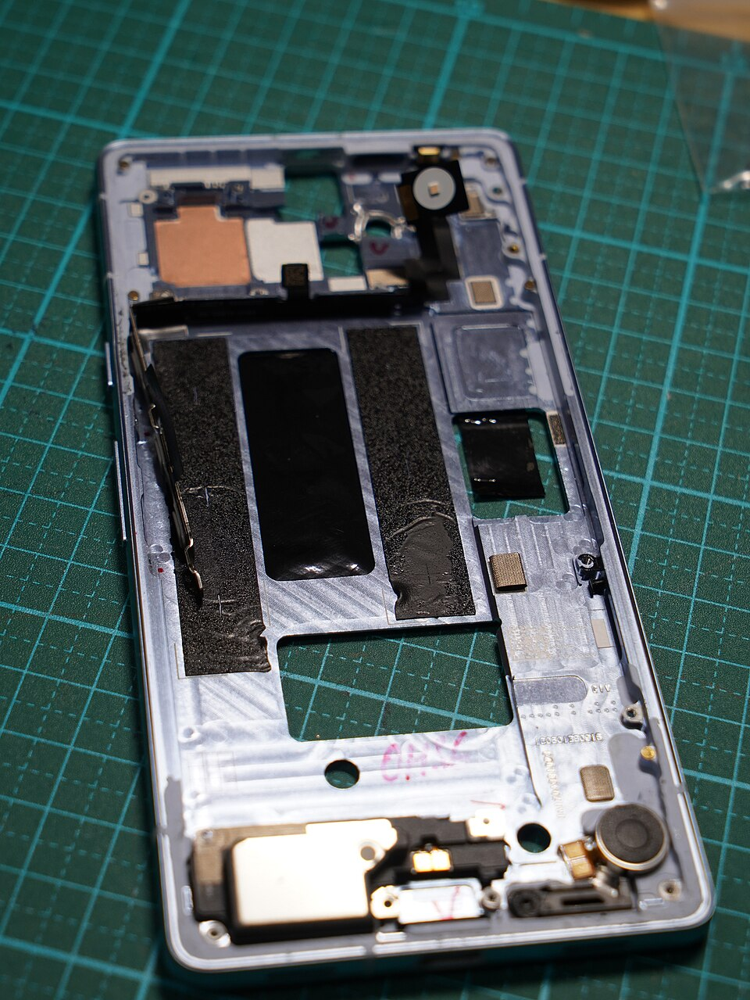
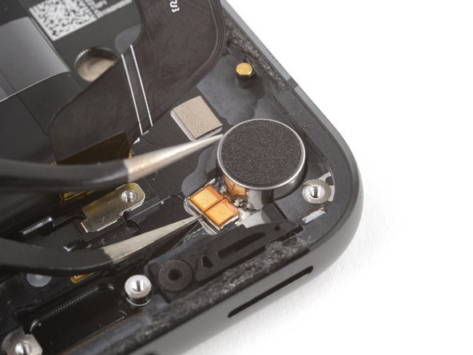

Phone microphones, speakers and haptics
Trace sound through its physical path and signal route. Use the result to separate a blocked port, a routing fault, a loose actuator and an electrical failure.
Follow sound from the case to the recording
A phone microphone is a transducer that turns air-pressure changes into an electrical signal. In a common digital MEMS microphone, a tiny moving membrane senses pressure. A chip inside the package processes the signal and passes a digital stream to the phone. The package can have its sound inlet on the top or the bottom. Follow the acoustic path from the outside opening, through any mesh and gasket, into that inlet. A bottom-ported microphone may receive sound through a hole in the board itself.
The gasket aligns and seals the channel. A missing or pinched gasket can let sound leak from the housing or loudspeaker into the microphone. A partially blocked mesh can attenuate the voice and change its tone while the electronics still report a healthy device. Compare equivalent assemblies at the same distance and level. A probe pushed through the exterior hole can destroy a mesh or membrane.

Photo by Eavesdropper6735, scaled with on-page callouts. Original photo · CC0.


Photo by Spencer Day and iFixit contributors, with on-page callouts. Original photo · CC BY-NC-SA 3.0.
Watch. Follow sound through the opening in the MEMS package, then trace which parts of the phone bring sound to that opening. STMicroelectronics’ MEMS microphone explainer on YouTube.
Which input and output does the symptom exercise?
| Test | Path observed | Next comparison |
|---|---|---|
| Local voice recording | App-selected input, its acoustic channel and recording chain. | Play the same file through known-good headphones or a second device. This separates capture from playback. |
| Video with front or rear camera | A camera app can choose a different mic or combine several. | Keep distance, room and test phrase constant. Note the camera and the app. |
| Call in normal mode or on speaker | Call processing and mode-specific microphones and outputs. A call also depends on the connection and remote device. | Try an available local mic diagnostic and a consenting second caller. Compare both directions of speech. |
| Headset or Bluetooth | Another input, output or both can be selected. The active route depends on app and accessory. | Check the selected route, then disconnect the accessory and repeat the same stimulus. |
A loudspeaker drives a diaphragm to move air. Its module and the surrounding cavity shape frequency response and prevent front-to-back sound leakage. Damage to a seal can change loudness or cause buzzing. Hold the test volume constant and try a voice recording as well as a short steady tone at a comfortable level. A noise that appears only when a panel is fitted can help locate a mechanical contact or loose screw.
What creates vibration?
An eccentric rotating mass (ERM) motor spins an off-centre weight. It takes time to accelerate and to slow down. A linear resonant actuator (LRA) moves a spring-mounted mass back and forth. Its driver excites it near the mechanical resonance and may brake it at the end of a pulse. A module’s outline does not reliably tell you which drive it needs. Use its part number, connector drawing and the manufacturer’s data. An LRA requires the specified alternating drive, so a direct battery connection is an unsuitable test.
Follow the command from the operating system to the haptic driver, then through the connector or spring contacts to the actuator and its mounting seat. A mis-seated actuator can buzz against the chassis even when the driver is working. A phone with the right motor can still have per-event vibration disabled. Check both conditions using the same stimuli before and after the repair.
Use the theory at the bench
- When local recorder clips are clear through headphones but the other person hears silence in one call mode, record the good capture path and identify the affected call mode before ordering any part. P85 microphone and call audio.
- When keyboard vibration works but calls never vibrate, check the call settings with a known incoming call. If every stimulus fails and the correct motor is fitted, test the connector and seating as the service manual directs. P84 Android haptics.
See the cross-section of a sound channel and a board with both actuator types fitted. Infineon MEMS microphone application note · Texas Instruments haptic driver evaluation board.